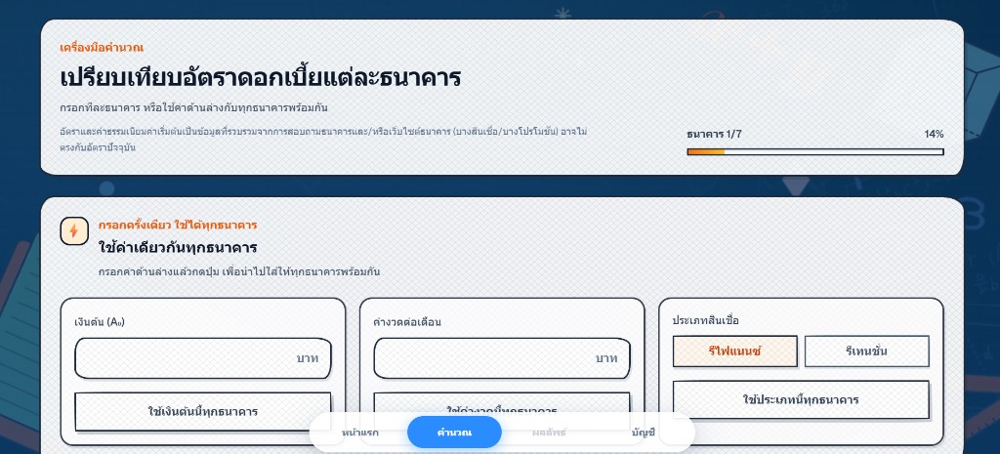
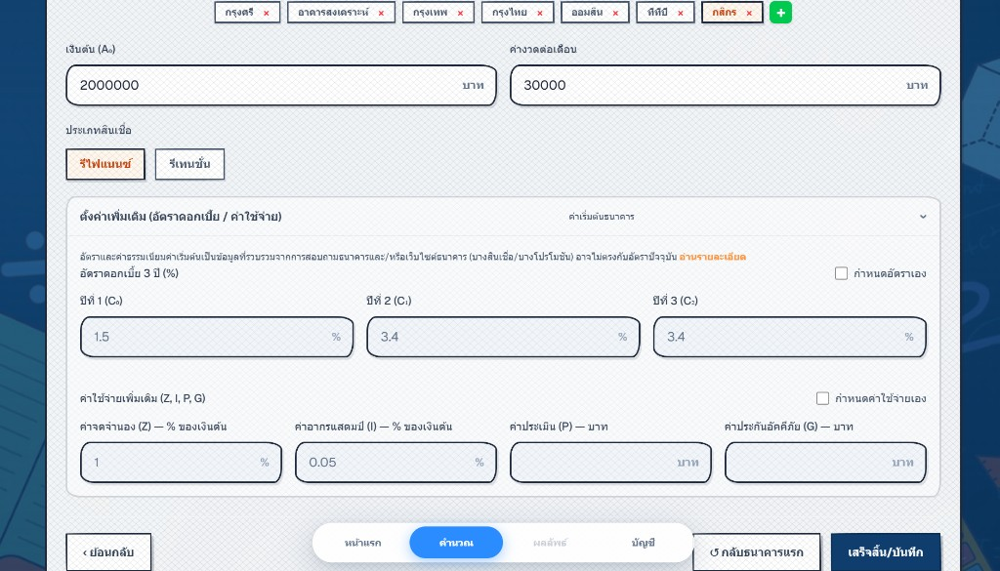
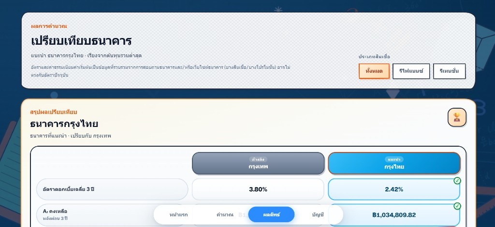
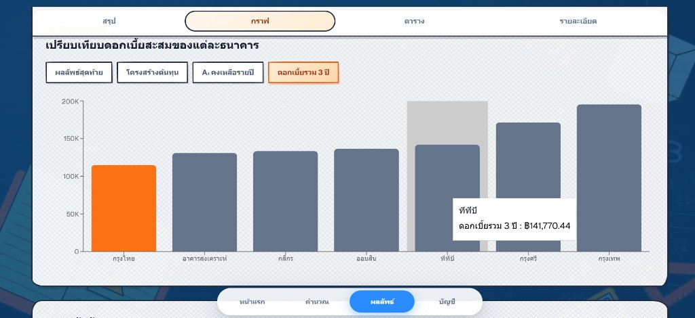

RefiLab เป็นเว็บสำหรับโครงงานคณิตศาสตร์ ใช้คำนวณและเปรียบเทียบต้นทุนสินเชื่อบ้านจากหลายธนาคาร ไม่ต้องติดตั้งแอป — เปิดผ่านมือถือหรือคอมพิวเตอร์ได้เลย (ล็อกอินเพื่อบันทึกข้อมูลเป็นทางเลือก ไม่บังคับ)
1
เปิดเว็บไซต์ RefiLab
เข้า https://mathweb-main.vercel.app/ จะเห็นหน้าแรกพร้อมปุ่มเริ่มใช้งาน
กด 「เริ่มคำนวณ」 หรือเมนู 「คำนวณ」 ด้านล่าง
2
กรอกข้อมูลพื้นฐาน (ใช้ได้ทุกธนาคาร)
ในหน้า 「คำนวณ」 กรอกข้อมูลหลักในส่วน 「กรอกครั้งเดียว ใช้ได้ทุกธนาคาร」 ได้แก่
เงินต้น ค่างวดต่อเดือน และเลือกประเภทสินเชื่อ:
- รีไฟแนนซ์ — ย้ายสินเชื่อไปธนาคารอื่น
- รีเทนชัน — ต่อสัญญากับธนาคารเดิม

3
ตั้งค่าแต่ละธนาคาร (ถ้าต้องการ)
เลือกธนาคารจากแถบด้านบน แล้วปรับรายละเอียดเพิ่มเติมได้ เช่น
- อัตราดอกเบี้ย 3 ปี (ใช้ค่าเริ่มต้นธนาคาร หรือติ๊ก「กำหนดอัตราเอง」)
- ค่าใช้จ่ายเพิ่มเติม เช่น ค่าจดจำนอง ค่าอากรแสตมป์ ค่าประเมิน ค่าประกัน

💡 อัตราดอกเบี้ยในระบบเป็นข้อมูลอ้างอิงที่รวบรวมไว้ สามารถแก้เป็นค่าจากใบเสนอของธนาคารจริงได้
4
ดูผลเปรียบเทียบธนาคาร
ไปที่เมนู 「ผลลัพธ์」 ระบบจะเรียงธนาคารจากต้นทุนรวมต่ำสุด
และแสดงธนาคารที่แนะนำ สลับดูได้หลายรูปแบบ:
- สรุป — เปรียบเทียบอัตราดอกเบี้ยเฉลี่ยและยอดคงเหลือหลังผ่อน 3 ปี
- กราฟ — ดูดอกเบี้ยสะสม / ต้นทุนรวม 3 ปีของแต่ละธนาคาร
- ตาราง / รายละเอียด — ดูตัวเลขละเอียดเพิ่มเติม
4.1 แท็บ「สรุป」— เปรียบเทียบธนาคารที่แนะนำ

4.2 แท็บ「กราฟ」— ดูดอกเบี้ยรวม 3 ปีของแต่ละธนาคาร

💡 กด「กลับไปแก้ไขข้อมูล」ได้ถ้าต้องการเปลี่ยนตัวเลขแล้วคำนวณใหม่